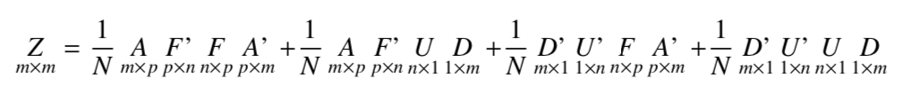
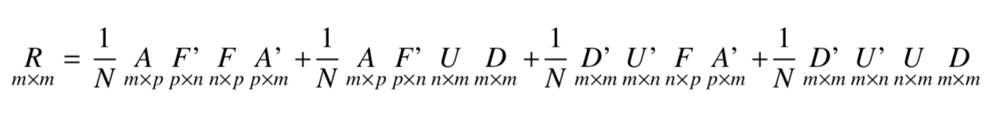

Support
はじめに
このページでは，拙著の誤字脱字等，修正情報などを記録しています。
編集に際しては，何度も丁寧に校正しているつもりではありますが，どうしても完璧なものができませんで，ご迷惑をおかけしておりますことをお詫びいたします。
データの提供
Rでらくらく心理統計 RStudio徹底活用
この本に関するRコードをまとめたのがこちらになります。 本書の中でRを使って描かれた図表についても，圧縮ファイルに含まれていますコードを実行していただければ再現できます。
訂正一覧
研究論文を読み解くための多変量解析入門 基礎篇: 重回帰分析からメタ分析まで
- P.150
- 誤）「-0.967という回帰係数は14.2°でＭＤＳ第二軸と交わっている。-0.952は14.7°で交わっている。」
- 正）「-0.967という回帰係数は14.7°でＭＤＳ第二軸と交わっている。-0.952は17.8°で交わっている。」
言葉と数式で理解する多変量解析入門(https://amzn.to/2K5aiNa)
P.110 dyでの偏微分の式についての説明で，「dyは」に続く式の左辺の分母
誤) f(x,y)/dx=…
正) f(x,y)/dy=…
P.56 Rでの線形回帰係数を求める関数
誤) 最尤法でのフィッティングを求める関数lm
正) 最尤法でのフィッティングを求める関数glm
Rでのlm関数は，内部でlm.fit関数を呼び出しており，これは最小二乗法で推定値を求めているようです。最尤法で求めたい場合は，glm関数を使い，family=‘gaussian’ オプションをつけることになります。推定値は同じ結果になりますので，以後の解説に間違いはありません。
初版に含まれる誤表記と修正は以下の通りです
P. 28 1行目
- 誤) 標準化することで，間隔尺度水準のデータに0点が与えられることになり，比率尺度水準の値として扱うことが可能になるということです。
- 正) 標準化することで，間隔尺度水準のデータ同士の原点が揃うことになり，量的なデータとして扱いやすくなるということです。
P.29 表2.7 相関係数表
- 誤)英語の列の相関係数が「0.000」
- 正)計算できないので，ゼロではなく，何も書くべきではありませんでした。
P. 41 図3.3 因子分析系の基準の説明
- 誤) 共変動を手がかりに，なるべく小数の
- 正) 共変動を手がかりに，なるべく少数の
P. 53 式4.6
- 誤)a=s_{xy}/s_{x}^2 = r_{xy}*s_x/s_y
- 正)a=s_{xy}/s_{x}^2 = r_{xy}*s_y/s_x
P.61 図4.8
- 正）

- 正）
P.69 引用文献に脱字
- 誤) 南風原朝和(2002) 理統計学の基礎
- 正) 南風原朝和(2002) 心理統計学の基礎
P.93 SMCの説明4行め
- 誤) 相関(重相関)を共通性として用いる
- 正) 相関(重相関)係数の二乗を共通性として用いる
P.97 13行め
- 誤) 一方で，各座標軸に対し水平におろした座標
- 正) 一方で，各座標軸に対し垂直におろした座標
P.117 脚注5
- 誤) 例えばサイコロの目が1か2である確率は・・・
- 正) 例えばサイコロの目が1回目に1がでて，2回目に2がでる確率は・・・
P.138 7.4一般化線型モデルの4行目
- 誤) どちらでもgeneralとgenerarizeの違いでしか・・・
- 正) どちらでもgeneralとgenerarizedの違いでしか・・・
P.178 図9.7
- 正)図の赤色のところが変更点です。

- 正)図の赤色のところが変更点です。
P.179 一行目の数式
- 誤) 
- 正) 
221ページ 表11.9
- 正) 血圧の列，「普通」と「低い」のラベルの位置が逆
豊田秀樹（編）「たのしいベイズモデリング」P.68–78 第7章，心の旅が始まる–観光のイメージの世代間比較–
- P.68 7.1 個人差多次元尺度構成法 2行目
- 誤) もちろんすべて言葉で表説明できるものでもない
- 正) もちろん全て言葉で説明できるものでもない
- P.70 L.15
- 誤) 一方，Bは左右方向を縮小し(\(w_{B2}<1\))，上下方向を拡大している(\(w_{B1}>1\))
- 正) 一方，Bは左右方向を縮小し(\(w_{B1}<1\))，上下方向を拡大している(\(w_{B2}>1\))
- P.73 表7.2 グループごとの回答者数
- MとFのラベルが逆
- P.73 L.3
- 誤) 男性をF，女性をMと記号化している。20Fは20代男性，30Mは30大女性を意味する。
- 正) 男性をM，女性をFと記号化している。20Mは20代男性，30Fは30大女性を意味する。
- P.75 表7.3 回答群ごとの次元の重み
- MとFのラベルが逆
ソシオン理論入門―心と社会の基礎科学
ソシオン理論入門―心と社会の基礎科学は2006年4月，北大路書房より出版されました。
P.1 ジェイムズ「心理学」より
- 誤）人が持っているもっとも特異な社会的自我は，彼が愛する物の心の中にあるものである。
- 正）人が持っているもっとも特異な社会的自我は，彼が愛する者の心の中にあるものである。
社会調査士のための多変量解析法
社会調査士のための多変量解析法は2007年5月，北大路書房より出版されました。
- P.87 式[9.15] 共通性\(h^2\)の領域が\(d_j^2\)まで含んでいるが，正しくは\(a_{jm}^2\)まで。
- P.104 平均値ベクトル\(m\) の式中，\(x'\)は，正しくは\(X'\).
- P.109 図11.4で第一固有値の伸縮方向が(1,-2)になっているが，正しくは(1,1)方向。
- P.125 T技法とS技法の説明が逆になっています。回答者間相関から(回答者)因子を出すのがS技法，時点間相関から(時間)因子を出すのがT技法
M-plusとRによる構造方程式モデリング入門
M-plusとRによる構造方程式モデリング入門は2014年1月に北大路書房より出版されました。
この本につきましては，専用のサポートサイト にて対応します。